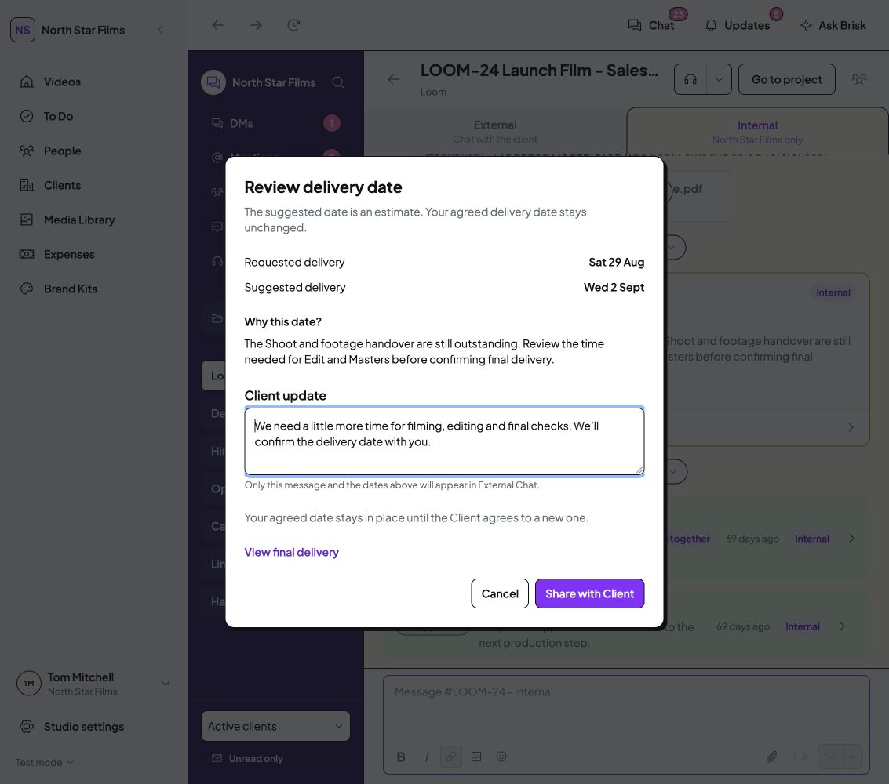
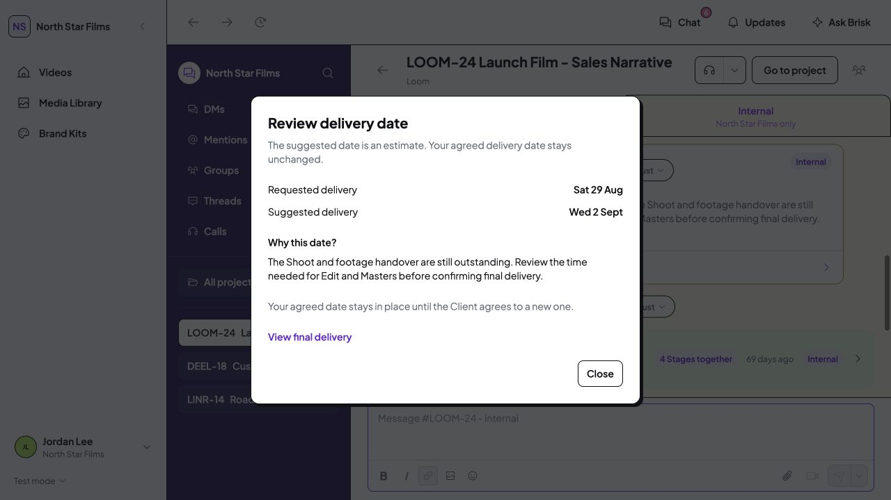

Brief: one line before submission
When the requested date is earlier than the existing sample assessment, the suggestion appears beside the date question. Draft changes do not create timing posts. Explicit submission moves the matching timing discussion to Project Chat.
 Earlier capture before icon removal · Customer · /projects/loom-launch-film/stages/brief · 1133 × 1000 · Draft date, before submission. Click to open the original at full resolution.
Earlier capture before icon removal · Customer · /projects/loom-launch-film/stages/brief · 1133 × 1000 · Draft date, before submission. Click to open the original at full resolution.1440px capture · Chat after explicit demo submission
Project Chat: dates, reason and Review date
Current appearance: the separate severity pill is removed. Review the current colour-only treatment.

Production risks remain Internal until Staff deliberately share a separate, reviewed Client message. Clients see that reviewed copy, not the Internal explanation. Review date opens the date comparison and reason.
Earlier presentation before the colour-only correction
 Customer · External Project Chat · faithful crop of the 1440px capture. Click to open the original at full resolution.
Customer · External Project Chat · faithful crop of the 1440px capture. Click to open the original at full resolution.Full Client context · 1133px Client view

Studio Staff · Internal Project Chat · 1133 × 1000 · Before sharing. Click to open the original at full resolution.1440px producer dialog · Full Internal warning
Sharing or reading leaves the agreed delivery date and unresolved warning in place. The current View final delivery link opens the later approved proposal/agreement flow. Only explicit Client agreement changes the agreed date and resolves the related timing reviews.
Deadline: a persistent link to the message
Timing needs review sits beneath the stage countdown and final date. It opens the relevant project, channel and exact message. It is separate from date editing and unread state.
 Studio Staff · /active-videos · 1133 × 1000 · Table scrolled horizontally to show Deadline; after reading, sharing and Brief submission. Click to open the original at full resolution.
Studio Staff · /active-videos · 1133 × 1000 · Table scrolled horizontally to show Deadline; after reading, sharing and Brief submission. Click to open the original at full resolution.1440px capture · Focused Deadline comparison
Roles and nested navigation
- Staff can review Internal context and share the safe Client update.
- Clients cannot see unreleased risks, Internal Chat or Staff sharing controls.
- Assigned Freelancers can read their project’s warning and dates, without Staff sharing or Client agreement actions.
- Review date works inside Global Chat. View final delivery closes both overlays and opens the delivery screen.
- Escape closes date review and returns focus to Review date.

Studio Freelancer · Existing active scenario · 1133 × 1000 · Disposable origin 8784 only. Click to open the original at full resolution.Freelancer My jobs warning · Global Chat review · Collapsed navigation
Verification and boundaries
The seven targeted resumption checks passed, closing the saved warning-scope gaps. Type-check passed; Videos, Chat, Brief and Final delivery returned HTTP 200. Both desktop widths and expanded/collapsed navigation were inspected. Browser diagnostics showed no warnings or errors in the inspected tabs.
Browser actions used separate origins 8783 and 8784. The existing mock Loom offer was accepted only in the disposable Freelancer session to exercise the assigned state. No working-origin data, original mock records, permissions, assets, dependencies or earlier app changes were edited.
This is the approved warning UI, not an automatic scheduling engine. Suggestions still come from explicit typed Loom/Hims prototype assessments, using the existing sample dates. No live AI forecast, public-holiday calendar, automatic stage timers, Studio turnaround settings, revision-round policy, backend, email or production message delivery was added. Those remain separate work. Mobile verification stays deferred.
The later Final delivery rollout has its own verification limits, including simultaneous-action and closed-project checks. Completing this warning pack does not erase those limits or mark the entire audit complete.
Evidence and saved state
No tests, production build, installation, commit, push or external publication. Review status remains awaiting Tom’s visual sign-off.